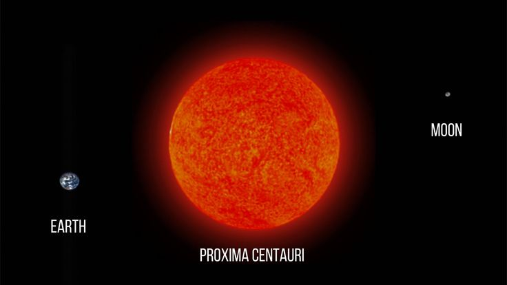
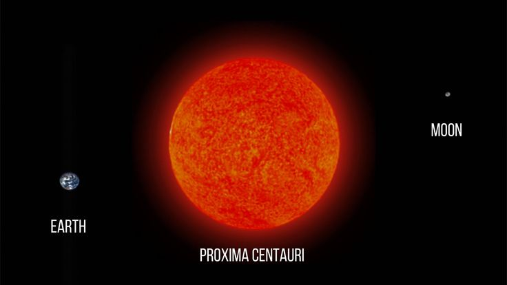

Las Estrellas
Las estrellas son gigantes esferas de plasma que brillan gracias a las reacciones nucleares que ocurren en su núcleo. Son los elementos fundamentales del universo visible y nos dan luz y energía.
Las estrellas son gigantes esferas de plasma que brillan gracias a las reacciones nucleares que ocurren en su núcleo. Son los elementos fundamentales del universo visible y nos dan luz y energía.
